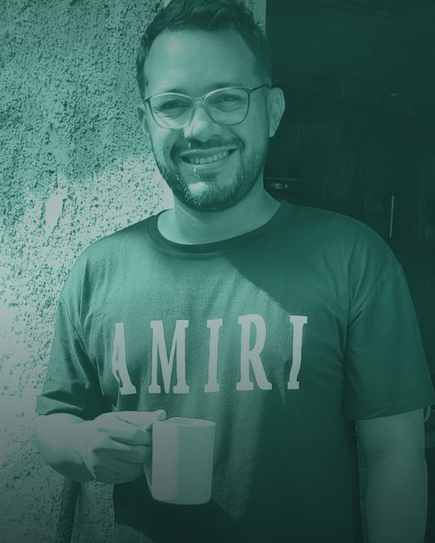

Fundador · Doclick
Hola, soyEsteban García
Estudiante de medicina · UNERG
@estebangarcia_vzla · Maturín
2.º añomedicina UNERG
Doclickfundador
GranadaCEO
01Sobre mí
Me dijeron que era tarde para medicina. Hoy voy en 2.º año en la UNERG, soy papá y construyo herramientas para que la gente encuentre buenos médicos.
- Medicina fácil
- Med + IA
- Marketing médico
- Maturín
02¿Eres médico?
Te grabamos en tu consultorio y te armamos tu perfil con video y tu página para Instagram.
Quiero mi perfil en Doclick